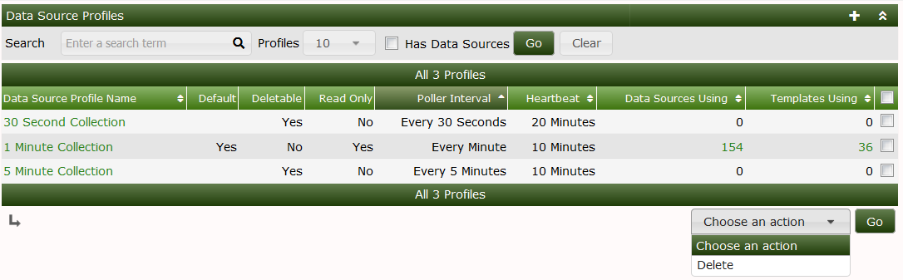
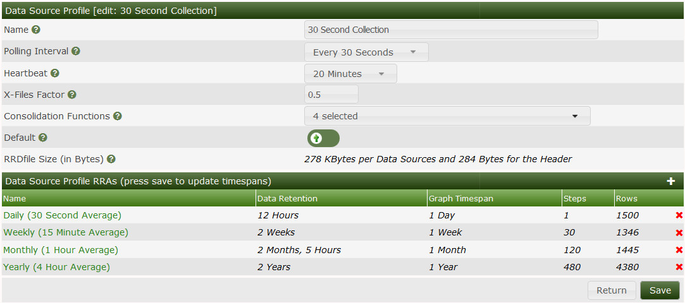
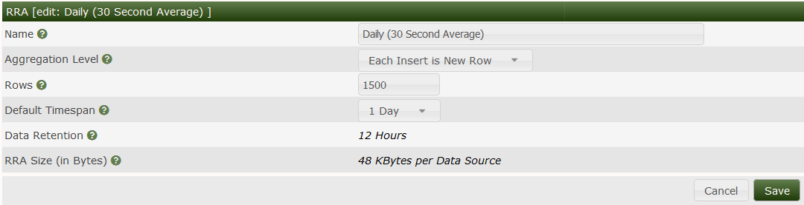

This section will describe Data Source Profiles in Cacti.


The following values are for the disk usage per Data source for the respective data profile
Daily 48kb
Weekly 43kb
Monthly 46kb
Yearly 140kb
Daily 93kb / data source
Weekly 45kb / data source
Monthly 47kb /datasource
Yearly 140KB/data source
Daily 19kb / data source
Weekly 22kb / data source
Monthly 25kb / data source
Yearly 26kb / data source

The Cacti GUI allows you to change the averages on a specific Data source profile some setups require a higher resolution of data and you may want to change the averaging to keep the most data this will come with a cost of storage due to the bigger sized RRDfile
To do this follow these steps
Login to Cacti
Click on Presets >> Data Profiles
Select the profile you want to edit i.e 1 minute collection
Select the period which you want to edit i.e weekly
If you wish to change the average select the aggregate level for 1 minute you will be able to go as low as 5 Minutes
You will need to edit the Rows amount to match the data retention you want to set after this period the data will be averaged out to the monthly graph
Save config and generate graphs
This is a more data destructive route and it will depend on your situation. If you have graphs already on cacti you will not be able to use Method 1. An option if you do not care about the graphs is to either remove the graphs via the gui or run the following script /cli/php remove_graphs.php with the --all function.
This will REMOVE ALL THE GRAPHS and you can then follow the steps outlined in Method 1 to change the profile how you like
The rows calculation take in to account the following
Rows = Aggregate level * hours
Example
1 Minute aggregate level storing for 3 days ( 72 hours)
(Aggregate level)60 * 72 ( 72 hours) = 4,320